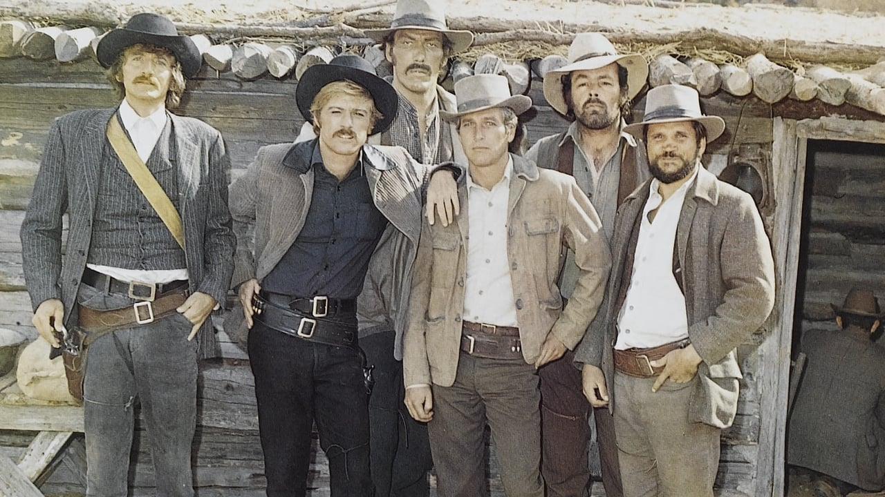
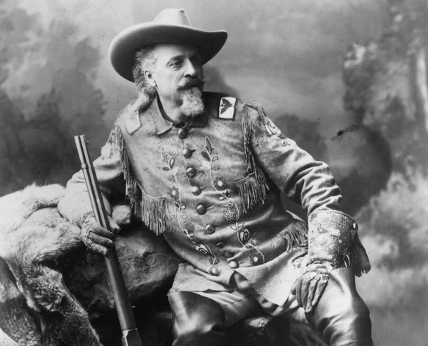

Джесси Вудсон Джеймс — сын Гражданской войны
Родился будущий нарушитель закона в Клэй-Каунти. Рос он вместе со старшим братом Александром Франклином, чаще отзывавшимся на имя Фрэнк, и младшей сестрой Сьюзан Лавенией Джеймс.
Отец, Роберт С. Джеймс, выращивал коноплю на продажу и был баптистским служкой. В его хозяйстве было шесть рабов и больше сотни акров земли. Во время Золотой лихорадки Роберт отправился в Калифорнию, где и умер. Хозяйство у семьи было довольно зажиточным, но Гражданская война нарушила эту идиллию. Миссури — штат пограничный, и на тот момент он сочетал в себе черты и Севера, и Юга. Три четверти местного населения, впрочем, происходили с Юга. Клэй-Каунти был одним из центров миграции южан; вновь прибывшие выращивали здесь те же культуры, что и у себя дома. Естественно, они привозили рабов, затем по мере необходимости докупали новых. Со временем в этом районе стало больше рабовладельцев, чем во всей округе. В остальных аспектах культура района также была южной.
Гражданская война фактически сформировала жизнь Джеймса. Его семья с самого начала выбрала сторону Конфедерации. Фрэнк Джеймс вступил в ряды местной армии, но очень скоро заболел и вернулся домой. В 1863 году его опознали как партизана: в мае поместье инспектировала группа юнионистов. Они пытали отчима Джесси и, согласно легенде, жестоко обошлись с самим мальчиком. Фрэнку удалось скрыться и вступить в ряды местного партизанского движения. Весной 1864 года к нему присоединился и 16-летний Джесси. Летом лидер группы был серьёзно ранен, и братьям пришлось искать другой отряд. За время войны Джеймс стал жестоким человеком, что и привело его на дорогу преступника.
Первое серьезное банковское ограбление Джесси, как утверждают многие, произвел у себя на родине, в Клэй-Каунти. Впрочем, на момент ограбления у Джеймса всё ещё должна была быть серьёзно ранена грудь, так что вопрос о его и Фрэнка участии остаётся открытым.

Джефферсон Рандольф Смит — «мыльный» преступник
Обстоятельства смерти Гарри Лнгбау остаются неизвестным по сей день. 3 ноября 1908 года курьера из компании «Aramayo Franke y Cia Silver Mine» ограбили два бандита недалеко от города Сан Винсент в южной Боливии. После чего преступники укрылись в небольшом отеле в Сан Винсенте, где прожили несколько дней. Через 3 или 4 дня полиция вышла на их след, и здание отеля было окружено местными полицейскими и двумя солдатами. В завязавшейся перестрелке бандиты, скорее всего, были убиты, однако до сегодняшнего дня неизвестно, были ли это Лонгбау и Паркер.
Джефферсон Рандольф Смит — «мыльный» преступник
Джефферсон Рандольф Смит II родился в 1860 году в штате Джорджия близ города Ньюнана. Его дед был владельцем плантации, а отец — адвокатом. Семья разорилась во время Гражданской войны и переехала в Раунд-Рок, чтобы начать жизнь заново.
В 1878 году Смит начал зарабатывать на жизнь мошенничеством. Парня часто можно было встретить на ярмарках, где он обирал доверчивых граждан в наперсток и три карты Монте. В то время коронным номером афериста была торговля «призовым» мылом.
Смит получил свою кличку — «мыльный» — за своё любимое мошенничество. Он продавал дешёвое мыло по баснословной цене, обещая, что под обёрткой нескольких кусков завёрнуто 100 долларов.
Обычно он вставал со своим лотком на углу оживленной улицы. Когда любопытных набиралось достаточно, он прямо у них на глазах распаковывал обёртку куска мыла, заворачивал мыло в банкноту не 2000$ а от $20 до $100 и снова упаковывал. Затем он перемешивал куски и зазывал людей попытать удачу. Торги начинались с одного доллара за кусок. Все призовые упаковки доставались сообщникам Джеффа. Открыв свою пачку и обнаружив внутри деньги, жулики испускали радостные вопли и хвалились, что обошли торговца в его собственной игре. Раздавая направо и налево советы о том, как выбрать счастливое мыло, помощники Джеффа усиливали доверие обывателей к мыльной лотерее.

Жизнь Билли Кида
Билли Кид родился в Нью-Йорке в 1860 году. Свою кличку он получил гораздо позже, а тогда его звали Уильям Маккарти. Когда ему было 14 лет, его мать умерла от туберкулеза, и он остался сиротой. Чтобы заработать на пропитание, мыл посуду в ресторане и подрабатывал официантом. Потом попал в дурную компанию — и началось.
Его поймали, когда он прятал белье, которое его приятель воровал из китайской прачечной. Так он в первый раз попал в тюрьму. Шериф прекрасно понимал, что перед ним — не серьезный преступник, он хотел для острастки подержать его пару дней за решеткой и отпустить. Но Билли не стал дожидаться развязки и сбежал. Он отправился к отчиму в Аризону, но тот не захотел иметь с ним дело, и Билли два года батрачил на местных ранчо.
Билли Кид впервые убил человека, когда ему было 16 лет. В салуне на него бросился кузнец, с которым он давно не ладил, прижал его к земле и стал бить. Билли сумел вытащить револьвер и выстрелил ему в живот. На следующий день кузнец умер. Путь к честной жизни после этого был заказан. Билли украл коня и сбежал в Нью-Мексико.
Там он присоединился к банде Джесси Эванса. Его ребят в тех местах называли просто «парни». Они грабили фермеров и угоняли их скот. Это было не такое мелкое преступление, как может показаться. В Нью-Мексико скот и пастбища могли стать поводом не только для убийства, но и для самой настоящей войны.